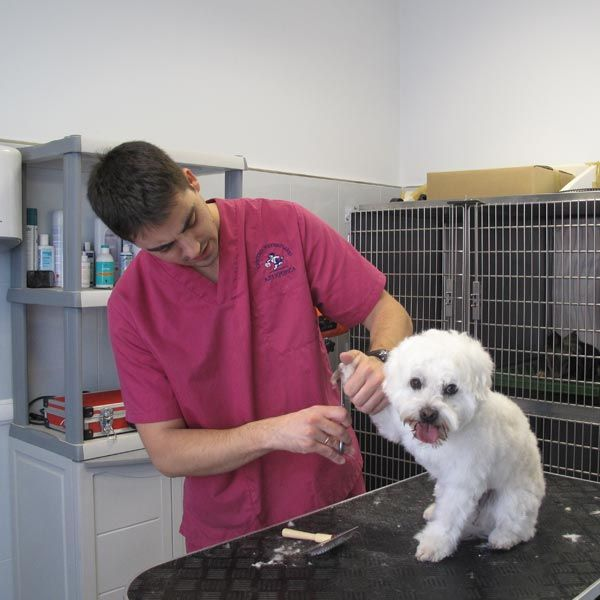
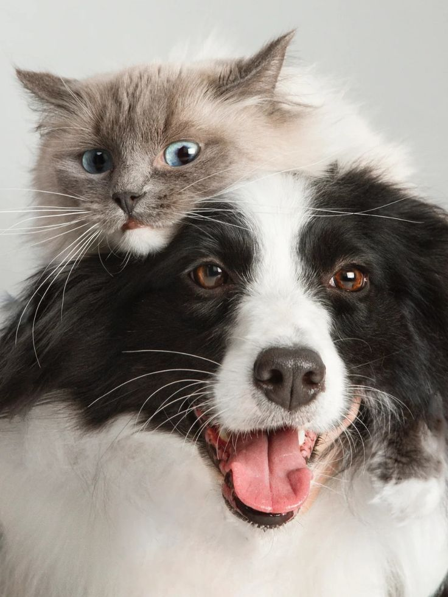
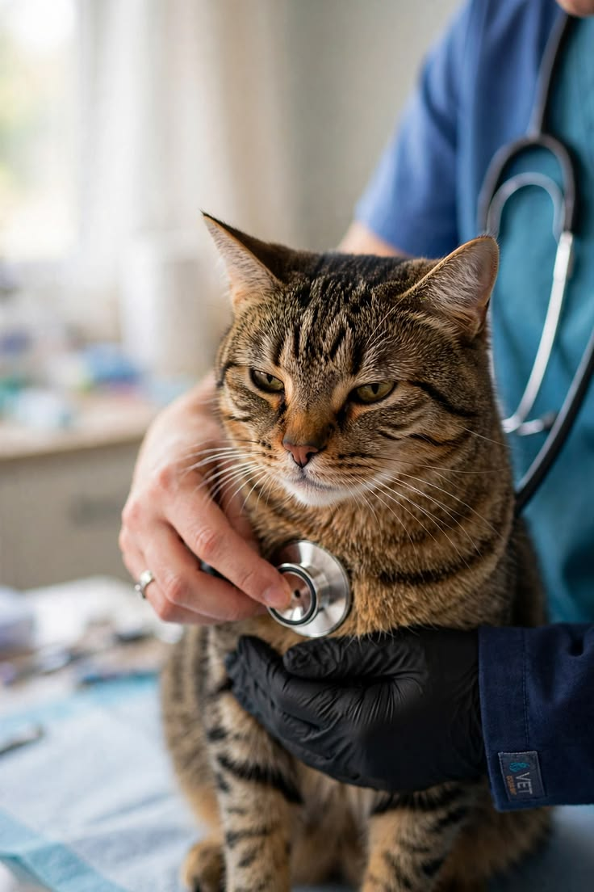
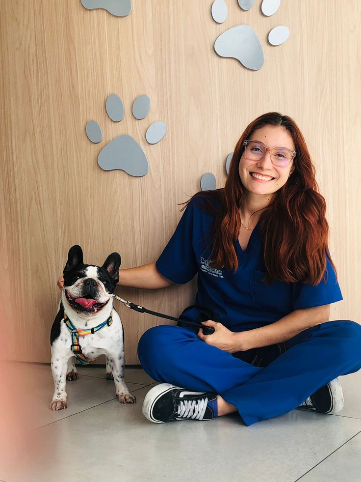

Medicina veterinaria
Dra. María López
Atención clínica para perros y gatos.
En Veterinaria La Mary brindamos atención profesional, responsable y cercana para cuidar a quienes forman parte de tu familia.

En Veterinaria La Mary sabemos que cada mascota es única. Por eso ofrecemos una atención pensada para acompañarlos en todas las etapas de su vida.
ContactanosConocé a algunos de los profesionales que forman parte de Veterinaria La Mary.

Atención clínica para perros y gatos.

Controles, vacunación y prevención.

Atención integral para perros y gatos.
Comunicate con nosotros para obtener más información.
Ir a contacto